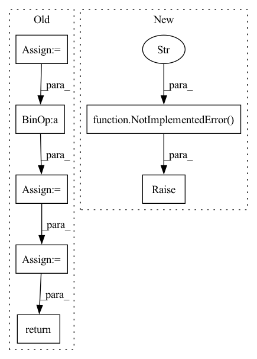

Pattern ID :30339

Before Change
sigmas_padded = rearrange(sigmas, "b -> b 1 1")
// Add noise to input
noise = default(noise, lambda: torch.randn_like(x))
x_noisy = x + sigmas_padded * noise
// Compute denoised values
x_denoised = self.denoise_fn(x_noisy, sigmas=sigmas, **kwargs)
// Compute weighted loss
losses = F.mse_loss(x_denoised, x, reduction="none")
losses = reduce(losses, "b ... -> b", "mean")
losses = losses * self.loss_weight(sigmas)
loss = losses.mean()
return loss
class DiffusionSampler(nn.Module):
After Change
raise NotImplementedError("Diffusion class missing denoise_fn")
def forward(self, x: Tensor, noise: Tensor = None, **kwargs) -> Tensor:
raise NotImplementedError("Diffusion class missing forward function")
class VDiffusion(Diffusion):
def __init__(self, net: nn.Module, *, sigma_distribution: Distribution):
In pattern: SUPERPATTERN
Frequency: 5
Non-data size: 7
Instances
Fragment ID: 89792858
Project Name: archinetai/audio-diffusion-pytorch
Commit Name: 68da808cd7e5acb5c571cf14ccefecb3ddceec5b
Time: 2022-10-08
Author: flavio.schneider.97@gmail.com
File Name: audio_diffusion_pytorch/diffusion.py
M Class Name: Diffusion
N Class Name: Diffusion
M Method Name: forward(3)
N Method Name: forward(3)
M Parent Class: nn.Module
N Parent Class: nn.Module
M File Name: audio_diffusion_pytorch/diffusion.py
N File Name: audio_diffusion_pytorch/diffusion.py
M Start Line: 310
M End Line: 329
N Start Line: 109
N End Line: 109
'>
Before Change
// Predict network output and add skip connection
c_skip, c_out, c_in, c_noise = self.get_scale_weights(sigmas)
x_pred = self.net(c_in * x_noisy, c_noise, **kwargs)
x_denoised = c_skip * x_noisy + c_out * x_pred
// Dynamic thresholding
if self.dynamic_threshold == 0.0:
return x_denoised.clamp(-1.0, 1.0)
else:
// Find dynamic threshold quantile for each batch
x_flat = rearrange(x_denoised, "b ... -> b (...)")
scale = torch.quantile(x_flat.abs(), self.dynamic_threshold, dim=-1)
// Clamp to a min of 1.0
scale.clamp_(min=1.0)
// Clamp all values and scale
scale = pad_dims(scale, ndim=x_denoised.ndim - scale.ndim)
x_denoised = x_denoised.clamp(-scale, scale) / scale
return x_denoised
def loss_weight(self, sigmas: Tensor) -> Tensor:
// Computes weight depending on data distribution
After Change
sigma: Optional[float] = None,
**kwargs,
) -> Tensor:
raise NotImplementedError("Diffusion class missing denoise_fn")
def forward(self, x: Tensor, noise: Tensor = None, **kwargs) -> Tensor:
raise NotImplementedError("Diffusion class missing forward function")
'>
Fragment ID: 89793819
Project Name: archinetai/audio-diffusion-pytorch
Commit Name: 68da808cd7e5acb5c571cf14ccefecb3ddceec5b
Time: 2022-10-08
Author: flavio.schneider.97@gmail.com
File Name: audio_diffusion_pytorch/diffusion.py
M Class Name: Diffusion
N Class Name: Diffusion
M Method Name: denoise_fn(4)
N Method Name: denoise_fn(4)
M Parent Class: nn.Module
N Parent Class: nn.Module
M File Name: audio_diffusion_pytorch/diffusion.py
N File Name: audio_diffusion_pytorch/diffusion.py
M Start Line: 276
M End Line: 305
N Start Line: 106
N End Line: 106
'>
Before Change
grad = self.pool.operator(cmo, bgrad, op=operator.add)
// compute the total wf
psi = self.pool(cmo)
out = self.fc(grad * psi)
out = out.transpose(0, 1)
// assemble
return out
def get_hessian_operator(self, x, ao, dao, d2ao, mo):
Compute the Bkin matrix
After Change
Args:
x ([type]): [description]
raise NotImplementedError(
"Gradient through Jacobi formulat not implemented for backflow orbitals")
'>
Fragment ID: 89792793
Project Name: nlesc-jcer/qmctorch
Commit Name: 30dbeefc245dd82b434a169a29afba38c2c66e32
Time: 2021-04-13
Author: nicolas.gm.renaud@gmail.com
File Name: qmctorch/wavefunction/slater_jastrow_backflow.py
M Class Name: SlaterJastrowBackFlow
N Class Name: SlaterJastrowBackFlow
M Method Name: gradients_jacobi(3)
N Method Name: gradients_jacobi(3)
M Parent Class: SlaterJastrowBase
N Parent Class: SlaterJastrowBase
M File Name: qmctorch/wavefunction/slater_jastrow_backflow.py
N File Name: qmctorch/wavefunction/slater_jastrow_backflow.py
M Start Line: 210
M End Line: 229
N Start Line: 208
N End Line: 209
'>
Before Change
- ** compute result ** - Tensor, returns the Embedding query results.
tensor_ids = Tensor(ids)
out_shape = tensor_ids.shape + (self._embed_size,)
flat_ids = tensor_ids.reshape((-1,))
output_for_reshape = ops.gather(self.embedding_table, flat_ids, 0)
output = ops.reshape(output_for_reshape, out_shape)
return output
After Change
NotImplementedError: If this interface is called.
raise NotImplementedError(f"Function `construct` not implemented in {self.__class__.__name__}")
'>
Fragment ID: 89792770
Project Name: mindspore-lab/mindnlp
Commit Name: 0d9e666d3adbbd5a00dc6c1ea544406a9938e3ff
Time: 2022-10-17
Author: 59411893+ZZhangyutong@users.noreply.github.com
File Name: mindnlp/abc/modules/embedding.py
M Class Name: TokenEmbedding
N Class Name: TokenEmbedding
M Method Name: construct(2)
N Method Name: construct(2)
M Parent Class: nn.Cell
N Parent Class: nn.Cell
M File Name: mindnlp/abc/modules/embedding.py
N File Name: mindnlp/abc/modules/embedding.py
M Start Line: 86
M End Line: 91
N Start Line: 89
N End Line: 89